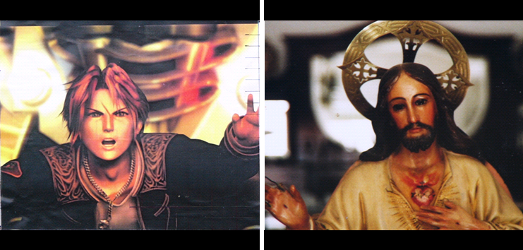

[TOP] Jose Quesada, High-five (in preparation*) two pieces of 30 x 30cm. 11 x 11 inch, Oil on canvas
The figures in this picture are loaded with meaning for completely different reasons. They are both related to ideal worlds that are substitutions for reality. Here we find two figures in similar pose, but in very different surroundings. One is scaping some kind of war robot that chases him; the other bless the emptyness of a living-room in a completely static setting. They are both crafted, designed objects. Imaginery has been exploited by kitsch artists to satiety. One of this images could be easily found on top of a TV set, while the other takes place inside. They both satisfice the desires of trascendence, eternity, etc... of the different people who inhabit the living-room.
The black borders fulfill two fuctions: (1) it just makes the picture square, and (2) brings back the stereotypes associated with the film industry (cinemascope), as if we were watching two stracts of some strange movie. It also help to relate both paintings, emphasizing what they share.